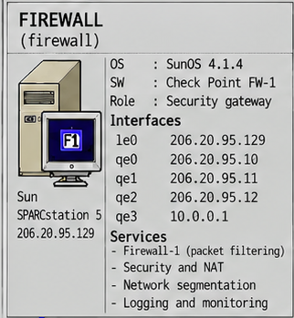
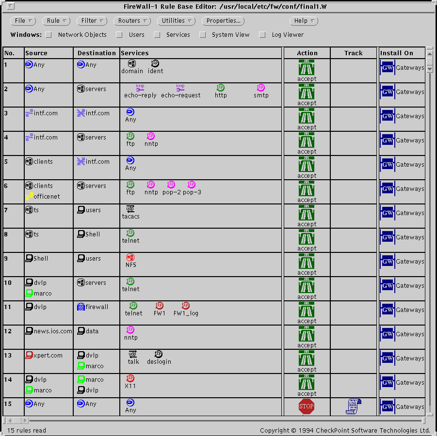

Systems Overview · 1995
FIREWALL (firewall)
Il gateway di sicurezza proteggeva i server centrali e la LAN dell'ufficio, con una policy separata per ogni interfaccia. I clienti dial-up stavano dal lato world/backbone e non erano oggetto della sua protezione.

images/internetforce_server_map.png (Systems Overview 1995).Identità del sistema
- Hostname
firewall- Indirizzi
10.0.0.1(fw-world) ·206.20.95.10(fw-data) ·206.20.95.11(fw-users) ·206.20.95.12(fw-shell) ·206.20.95.129(office)- Piattaforma
- Sun SPARCstation 5
- OS
- SunOS 4.1.4
- Ruolo
- Gateway Check Point FireWall-1: packet filtering, NAT e segmentazione.
Servizi e configurazione
| Servizio / ruolo | Descrizione | Configurazione / evidenza | Documentazione |
|---|---|---|---|
| FireWall-1 2.0a | Gateway di sicurezza: packet filtering, NAT e segmentazione di rete. | checkpoint/firewall-lic.txt · checkpoint/ | Sicurezza · TECHNICAL |
| Policy / rule base — evidenza visiva | Screenshot originale del Rule Base Editor (/usr/local/etc/fw/conf/final1.W), 15 regole. |
checkpoint/FW-policy.gif | Sicurezza |
| Routing e interfacce | Cinque interfacce Ethernet, rotte host-specific sui segmenti DATA/USERS, rotte dei POP. | network/rc.route · network/ | Panoramica dell'architettura |
| Avvio, logging e monitoraggio | Avvio di FireWall-1 (fwstart), accounting dial-up, loghost centrale. |
network/rc.local | Monitoraggio |
| Hardening di sistema | Script di permessi, account di servizio, inetd minimale, ftpusers. |
system/ · system/fixperms · ../users/system/ftpusers | Sicurezza |

Evidenza visuale della policy FireWall-1

Questo screenshot originale del Rule Base Editor è evidenza visuale della policy caricata, conservata come reperto. Non sostituisce la trascrizione testuale delle regole in Sicurezza, che resta la fonte primaria.
Nelle mappe
Documentazione tecnica completa
Apri il README canonico del firewall
La pagina HTML è una presentazione compatta; il README Markdown è la fonte canonica.